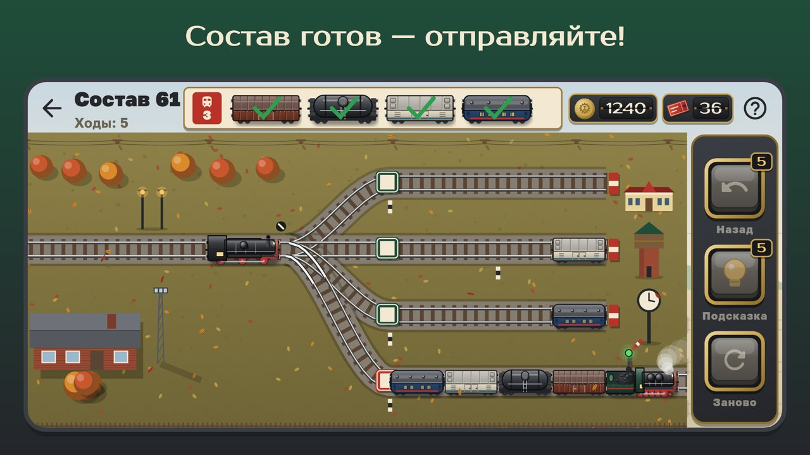

English

Сортировочная
Головоломка · 0+Собери поезд по натурному листу! Головоломка про советскую железную дорогу.
Маневровый тепловоз, веер стрелок, тупики и натурный лист — соберите поезд так, как велит диспетчер, и проводите его в путь.
Нажмите на вагон — тепловоз подцепит его вместе со всеми, что стоят ближе к горловине. Нажмите на путь — и группа уедет туда. Расставьте вагоны по тупикам и выстройте состав на пути формирования строго по натурному листу. Последний вагон сцеплен — семафор открыт, магистральный локомотив свистит и уводит поезд.

Натурный листЧто в игре
- 300 уровней в шести эпохах: от паровозов 1930-х под Москвой до ЭР200 на линии Москва — Ленинград, с Уралом, Средней Азией, Транссибом и зимней ночью на БАМе.
- Каждый уровень решён заранее: всегда есть путь к победе, а три звезды — за решение не длиннее эталонного.
- Новое каждые 10–20 уровней: сила тяги тепловоза, пути разной длины, сортировочная горка, вагоны с номерами, путь на ремонте, оборотная петля, два поезда сразу.
- Депо-музей: 18 советских локомотивов — Ов, ФД, П36, ТЭ3, ВЛ80, ЧС2, ВЛ85, ЭР200 и другие — открываются за звёзды; выберите, кто поведёт ваши поезда.
- Своя станция: водонапорная башня, вокзал, часы, фонари, клумбы и буфет.
- Ежедневный рейс и задания, праздники Нового года и Дня железнодорожника.
- Без спешки и проигрышей: ход назад, подсказка и начать сначала всегда под рукой.
- Работает без интернета, на русском и английском; по желанию — одно напоминание после недели без игры, отключается в настройках.
Отправление по расписанию — ваш первый состав уже ждёт!